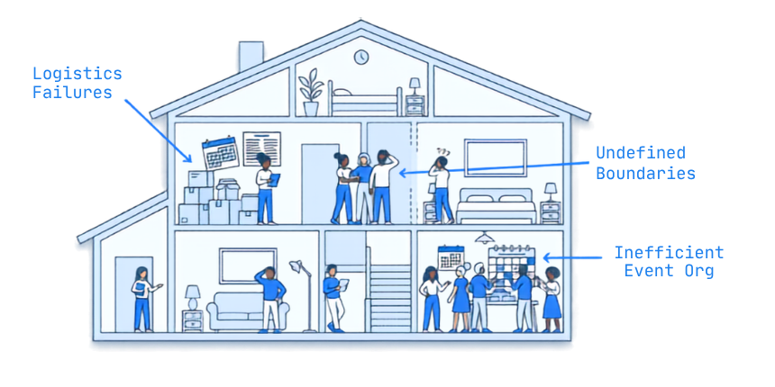

The actual member portal — grocery schedule, cleaning rotation, and events, live below.
e17collective.example/portal

A live-in cooperative traded chore charts and group texts for a member intranet.

E17 is a live-in cooperative running on shared labor and shared trust — grocery runs, cleaning rotations, and 15+ events a month, all coordinated by hand. Logistics kept failing quietly: chores fell through, event planning ran on group texts, and nobody had a clear read on who was responsible for what.
The goal wasn't more process — it was less friction. We built a member-only intranet that puts the whole household's shared logistics in one place: grocery schedule, cleaning rotation, and the events calendar, all live and editable by any member.
Admin time dropped by three quarters, event planning got three times more efficient, and every member actually uses it — because it replaced the group chat instead of adding to it.
"We stopped arguing about whose turn it was. It's just... on the schedule now."
From an E17 member, on what changed after the portal replaced ad-hoc group texts for chores and events.